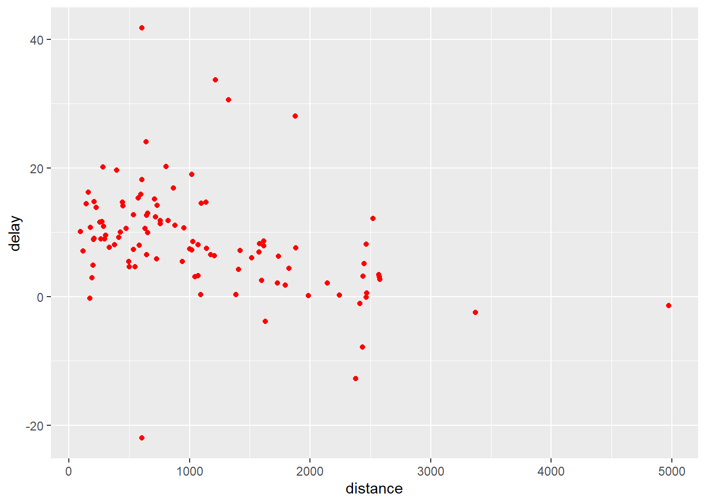
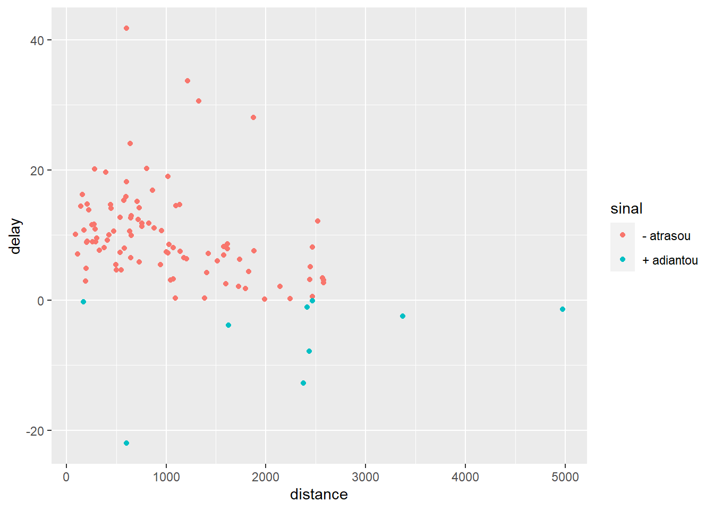
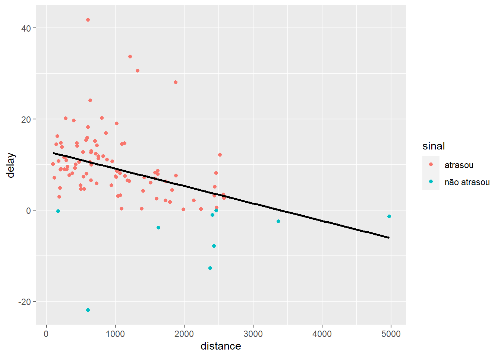
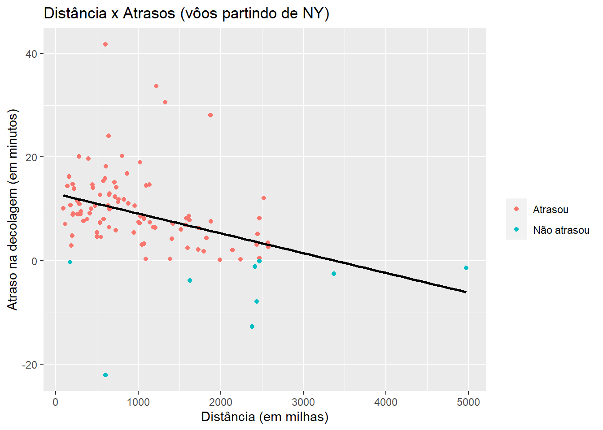
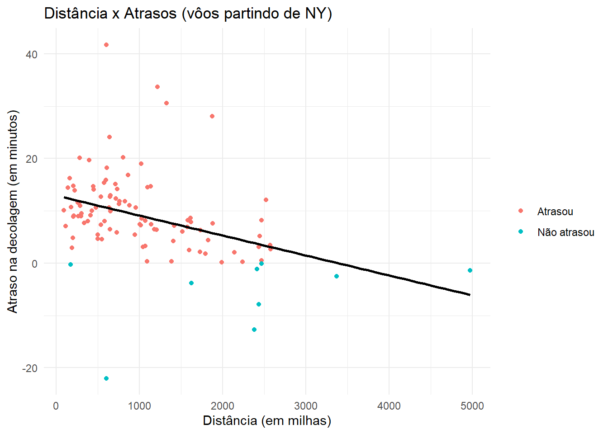

Capítulo 6 Criando um objeto ggplot
Para começar, vamos criar um objeto ggplot utilizando a base de dados flights, calculando o atraso médio dos voos por destino.
library(tidyverse)
atrasos <- flights %>%
filter(!is.na(distance), !is.na(arr_delay)) %>%
group_by(dest) %>%
summarise(distance = mean(distance),
delay = mean(arr_delay))
head(atrasos)## # A tibble: 6 × 3
## dest distance delay
## <chr> <dbl> <dbl>
## 1 ABQ 1826 4.38
## 2 ACK 199 4.85
## 3 ALB 143 14.4
## 4 ANC 3370 -2.5
## 5 ATL 757. 11.3
## 6 AUS 1514. 6.02
Observe que o objeto ggplot gerado representa apenas uma tela em branco, pois, dos três componentes básicos, apenas a base de dados (atrasos) foi especificada.
6.1 Gráfico de Dispersão
Nosso objetivo é criar um gráfico de dispersão, utilizando a geometria (geom_point).
Vamos mapear as variáveis (x e y) dentro do componente de estética (aesthetics):

Podemos criar uma variável que indica se houve atraso ou adiantamento, ajustando a cor dos pontos de acordo com essa nova variável:
atrasos %>%
mutate(sinal = ifelse(delay > 0, "- atrasou", "+ adiantou")) %>%
ggplot(aes(x = distance, y = delay)) +
geom_point(aes(color = sinal))
Além disso, adicionaremos uma camada () com a linha de tendência (equação da reta):
atrasos %>%
mutate(sinal = ifelse(delay > 0, "atrasou", "não atrasou")) %>%
ggplot(aes(x = distance, y = delay)) +
geom_point(aes(color = sinal)) +
geom_smooth(method = "lm",
se = FALSE,
color = "black")## `geom_smooth()` using formula = 'y ~ x'
Vamos agora personalizar o título do gráfico e dos eixos:
atrasos %>%
mutate(sinal = ifelse(delay > 0, "Atrasou", "Não atrasou")) %>%
ggplot(aes(x = distance, y = delay)) +
geom_point(aes(color = sinal)) +
geom_smooth(method = "lm",
se = FALSE,
color = "black") +
labs(title = "Distância x Atrasos (vôos partindo de NY)",
x = "Distância (em milhas)",
y = "Atraso na decolagem (em minutos)",
color = "")## `geom_smooth()` using formula = 'y ~ x'
Por fim, podemos ajustar a aparência geral do gráfico:
atrasos %>%
mutate(sinal = ifelse(delay > 0, "Atrasou", "Não atrasou")) %>%
ggplot(aes(x = distance, y = delay)) +
geom_point(aes(color = sinal)) +
geom_smooth(method = "lm",
se = FALSE,
color = "black") +
labs(title = "Distância x Atrasos (vôos partindo de NY)",
x = "Distância (em milhas)",
y = "Atraso na decolagem (em minutos)",
color = "") +
theme_minimal()## `geom_smooth()` using formula = 'y ~ x'